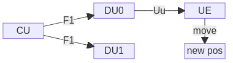

Handover Tutorial for OAI¶
This tutorial explains how to perform handovers. It covers F1 handovers (intra-gNB, within a single gNB between DUs), N2 handovers (inter-gNB, via the AMF) and Xn handovers (inter-gNB, directly between gNBs).
This document assumes familiarity with the F1 split architecture and basic OAI knowledge. Please refer to the prerequisite documentation listed below:
- To run the Core Network
- To run OAI full stack with COTS UE
- F1 split design document for details on the F1 architecture and the networking relationships between the CU and the associated DUs.
- Xn design document for Xn handover (inter-gNB, prepared over Xn)
Considered setup for F1 handover¶
We consider one CU and two DUs, connected over F1. The UE is initially connected over the radio interface ("Uu") to DU0. Via movement to a new position ("new pos"), it will trigger an event such that the CU triggers a handover of the UE from DU0 to DU1. Alternatively, a manual trigger can do the same.

What is a gNB neighbor?¶
Network continuity is a key aspect of 5G. In the 5G architecture, gNB neighbours play a central role in maintaining service continuity through mechanisms such as handover and load balancing. By definition, a gNB neighbour is another gNB that can be measured and linked by the UE. If the current serving gNB is no longer optimal, the UE may connect to a neighbour gNB.
To support this behavior, the network configuration specifies additional frequencies and cells that the UE should measure. The UE reports these measurements to the network, which then decides whether or not to initiate a handover.
Neighbour types include: - Intra-gNB neighbours - cells belonging to the same gNB - Inter-gNB neighbours - cells belonging to different gNBs - Inter-RAT neighbours - cells belonging to another RAT (e.g., LTE)
Steps to run F1 handover with OAI UE¶
Measurement reporting and processing of RRC Reconfiguration for Mobility are not completed at the UE. Nevertheless, it is possible to make simple handover tests without any radio setup, on a single PC, with the OAI UE, in RFsimulator.
Build with telnet support¶
Since the UE does not support any measurement reporting, it cannot trigger a handover on its own; it has to be triggered manually through telnet. Thus, build both gNB and UE as well as activate the build of telnet to that purpose:
./build_oai --ninja --nrUE --gNB --build-lib telnetsrv
Run the setup¶
We will use the TDD configuration files in the repository for the CU as well for DU0 and DU1. Note how the DUs differ in their DU ID (for identification at the CU), nr cellid (global identification), physical cell ID (identification through UE), frequency (limitation at OAI UE), and IP address.
Make sure that using RFsimulator and the CU and each DU, you can achieve a full connection of the UE (independently, i.e., running one DU a time). Once this is done, follow below steps to trigger a handover:
Start the CU including telnet support:
sudo ./nr-softmodem -O ../../../targets/PROJECTS/GENERIC-NR-5GC/CONF/gnb-cu.sa.f1.conf --telnetsrv --telnetsrv.shrmod ci --telnetsrv.listenaddr 127.0.0.2
Start DU0:
sudo ./nr-softmodem --rfsim -O ../../../targets/PROJECTS/GENERIC-NR-5GC/CONF/gnb-du.sa.band78.106prb.rfsim.pci0.conf --rfsimulator.[0].serveraddr 127.0.0.1
This will show an error [HW] connect() to 127.0.0.1:4043 failed,
errno(111). This is expected, because the RFsim server is at the UE (to be
able to serve two RFsim clients, one DU each; see below for more info). Proceed
by starting the UE, and let it connect completely (this should make the error
go away):
sudo ./nr-uesoftmodem -r 106 --numerology 1 --band 78 -C 3450720000 --rfsim --uicc0.imsi 001010000000001 -O ../../../ci-scripts/conf_files/nrue.uicc.conf --rfsimulator.[0].serveraddr server
Note how the RFsimulator roles have been switched, and RFsim server is at the
UE side; this is important. Replace <config> with the UE configuration
matching your core. If you followed the CN and oaiUE tutorials, you can remove
-O <config> and replace it with --uicc0.imsi 001010000000001.
Once the UE is connected, start DU1:
sudo ./nr-softmodem --rfsim -O ../../../targets/PROJECTS/GENERIC-NR-5GC/CONF/gnb-du.sa.band78.106prb.rfsim.pci1.conf --rfsimulator.[0].serveraddr 127.0.0.1
Once DU1 is online, you can trigger a handover by issuing this command
echo ci trigger_f1_ho | nc 127.0.0.2 9090 && echo
Alternatively, you can trigger a handover using a xApp. First, recompile RAN
with E2_AGENT enabled, and build FlexRIC. Rerun the RAN nodes, start nearRT-RIC and xApp:
./build/examples/ric/nearRT-RIC
./build/examples/xApp/c/rc_handover/xapp_rc_handover
You should see how the UE switches from one DU to another. See additional information further below.
A number of remarks:
- DU0 and DU1 should use different SSBs, i.e., make sure that
ssb_PositionsInBurst_Bitmapis set to send SSB in different slots in the configurataion files of DU0 (e.g., set to 1) and DU1 (e.g., set to 2). - It is important that you start DU0, UE, DU1 in order, and having UE connect to DU0 before starting DU1. This is because we don't employ any channel emulation, and the UE could not decode the SIB1 of DU0 to connect.
- The RFsimulator roles are switched. Typically, the gNB RFsim acts as the server and the UE as a client. However, RFsim is limited to one server with multiple clients. Since the UE should be able to connect to both DUs, it has to act as the server, and both DUs are a client.
- If you see errors
could not open a socketand/orCould not start the RF device, this means that RFsim could not be started. Handover will not work; please refer to the preceding point to fix this (i.e., run the UE as the RFsim server). - In some cases, if the RFsim server is at the UE, the whole system can block; in this case, stop UE and all DUs and restart (the CU can keep running).
Additional information to the manual HO trigger¶
You can trigger the handover manually by logging in through telnet:
telnet 127.0.0.1 9090
and then manually typing ci trigger_f1_ho.
The command using nc (netcat) above triggers handovers directly from bash.
It does the same as logging in through telnet otherwise, and is a shorthand.
The full command is
ci trigger_f1_ho [cu-ue-id]
cu-ue-id is optional. If only one UE context is present in the RRC, it will
trigger the handover for this UE in a round-robin fashion across all DUs. If
there is only one DU, the handover request will be rejected. Similarly, if
there are multiple UE contexts present at RRC, the handover will be rejected,
and you have to manually type the CU UE ID. You can see a list of all UEs in
the file nrRRC_stats.log that is printed periodically in the working
directory of the CU.
Steps to run F1 handover with COTS UE¶
You can do handover across DUs with a COTS UE. Note that these DUs should be separated by at least multiple meters to ensure that the UE will receive different signal strengths when moving between cells. In the CI setup we use a digital 4 channel attenuator that allows us to "control" the transmitted signal from both RUs. This allows us to create a setup in which the UE thinks it's changing positions between 2 cells, but in reality it's not moving.
We support both intra-frequency and inter-frequency handovers. We have verified with USRPs only, although other radios should work as well.
For UEs, we verified Quectel modules, iPhones and Samsung S23 Ultra. Note, though, that not all phones might work; for instance, we did not achieve handovers with a OnePlus Nord, yet.
Steps¶
First, make sure that you can run both DUs with the CU independently. Use the same radio hardware for both radios to ensure that both cells can be received equally good by the UE.
In order to enable handovers (triggered by the UE), you have to configure the neighbour relation of the DUs at the CU. To do so, proceed as follows:
- To simplify filling the right values in the neighbour configuration, you can
rely on the information the CU has about both DUs. Start the CU and both
DUs. Navigate to the directory from which you started the CU, and print RRC
statistics:
cat nrRRC_stats.log - Fill in the
neighbour-config.confconfiguration file as shown below, and@includeit in the CU file. -
Start the CU and both DUs. If you are using an attenuator, make sure that the signal on one DU is stronger than the other.
-
Bring the phone close to one cell, and leave flight mode. It should connect to the DU to which it is closer/stronger signal.
- Move the UE towards the other DU; it should trigger an "A3 event" (Neighbour Becomes Better than Serving), and the CU will trigger the handover to the other DU.
The output on the terminal should be the same as with RFsim. If no handover is triggered:
- Make sure that both DUs use the same hardware. In case of USRPs, make sure that
they are synched:
- By connecting them to a GPS or an Octoclock to provide a common time and clock reference.
- By synchronizing the RU hosts.
- By using Openairinterface starting tag 2025.w42 (A fix was added to force the USRP to "use" the time/clock provided by the external source instead to its own master clock.).
- Make sure that the UE sees both cells. For instance, you can switch to flight mode, go closer to the other DU, and switch off flight mode -- the UE should connect to that second DU.
- We did not manage handover with every phone yet -- make sure you use one of the list provided above.
You can also force a handover through telnet as described above. (In fact, the decision about a handover is always at the network-side, the UE only "assists" through measurements telling the CU that one DU is stronger than others. Hence, "forcing" a handover just means that you manually trigger the handover, instead of waiting for UE measurement report.)
Our CI setup consists of:
- 2 USRPs B210 that are synchronized by connecting them to an Octoclock over
10MHz refrence and a PPS signal. The RU hosts are synchronized via NTP.
- Mini-Circuits RC4DAT-6G-60 programmable attenuator. To control the digital
attenuator, a Python script was developed ci-scripts/attenuatorctl.py.
- Quectel RM520 as a UE.
- The setup is run using Docker ci-scripts/yaml_files/5g_sa_f1_b210_ho.
To run the setup using Docker: - We consider 2 synchronized servers. One for each DU.
Example neighbour configuration¶
Below is an example neighbour configuration. It is based on this DU information
gathered from nrRRC_stats.log at the CU:
[1] DU ID 3585 (gNB-in-docker) assoc_id 4161: nrCellID 11111111, PCI 1, SSB ARFCN 643296
TDD: band 78 ARFCN 642024 SCS 30 (kHz) PRB 106
[2] DU ID 3584 (gNB-in-docker) assoc_id 4163: nrCellID 12345678, PCI 0, SSB ARFCN 643296
TDD: band 78 ARFCN 642024 SCS 30 (kHz) PRB 106
Note how both DUs have one cell on the same frequency and the same radio configuration. From this, fill the neighbour list as shown below.
Concretely, the first cell is 12345678 (on DU [2]), and it has 11111111
(on DU [1]) as its neighbour; hence in the first block, you fill
physical_cellId and other values for DU [1], and vice versa.
The below configuration further enables periodic measurements, A2 event
("Serving becomes worse than threshold"), and A3 events ("Neighbour Becomes
Better than Serving").
The A2 event can be disabled by setting enable = 0.
The A3 event cannot be disabled as of now. It can be made
specific to cells or set to physCellId = -1 which means "any cell".
hysteresis is a margin added to the serving cell measurements to
prevent unnecessary or frequent handovers. It ensures that the neighbouring
cell must show sufficiently better signal quality before a handover is
triggered. It is an integer between 0 and 30.
time_to_trigger the time during which specific criteria for the event
needs to be met in order to trigger a measurement report. It is an enumerated
parameter and in the configuration below it is set to 1 which corresponds to
ms40 or 40 milliseconds.
Note: For more information please refer to 3GPP TS 38.331 specifications.
############################################################
# gNB-to-gNB neighbour list + measurement configuration #
# for the 2-cell rfsim setup (gNB_ID 0xe00 & 0xb00) #
############################################################
neighbour_list = (
##########################################################
# Entry USED BY gNB_ID = 0xe00 (nr_cellid = 12345678L) #
##########################################################
{
nr_cellid = 12345678; # Serving cell of gNB 0xe00
neighbour_cell_configuration = (
{
gNB_ID = 0xe01;
nr_cellid = 11111111; # Cell served by gNB 0xe01
physical_cellId = 1;
absoluteFrequencySSB = 643296;
subcarrierSpacing = 1; # 30 kHz
band = 77;
plmn = { mcc = 001; mnc = 01; mnc_length = 2 };
tracking_area_code = 1;
}
);
},
##########################################################
# Entry USED BY gNB_ID = 0xe01 (nr_cellid = 11111111) #
##########################################################
{
nr_cellid = 11111111; # Serving cell of gNB 0xe01
neighbour_cell_configuration = (
{
gNB_ID = 0xe00;
nr_cellid = 12345678L; # Cell served by gNB 0xe00
physical_cellId = 0;
absoluteFrequencySSB = 643296;
subcarrierSpacing = 1; # 30 kHz
band = 77;
plmn = { mcc = 001; mnc = 01; mnc_length = 2 };
tracking_area_code = 1;
}
);
}
);
############################################################
# Common NR measurement-event configuration #
############################################################
nr_measurement_configuration = {
Periodical = {
enable = 1;
includeBeamMeasurements = 1;
maxNrofRS_IndexesToReport = 4;
};
A2 = {
enable = 1;
threshold = 60;
time_to_trigger = 1;
};
A3 = (
{
physCellId = -1;
offset = 10;
hysteresis = 0;
time_to_trigger = 1;
}
)
};
@include this configuration file inside the gNB section of CU file as shown
below.
plmn_list = ({ mcc = 001; mnc = 01; mnc_length = 2; snssaiList = ({ sst = 1, sd = 0xffffff })});
@include "neighbour-config.conf"
Handovers triggers and NTN¶
Typically, in terrestrial networks, channel measurements as well as criteria such as load in base stations, is used to determine when and where to handover a UE.
NTN¶
Doppler spreading and time selectivity of the channel are already a challenge for conventional terrestrial networks. However, in the context of non-terrestrial networks (NTN), and low-earth orbit (LEO) systems, the satellites can have speeds up 7.56 km/s, which is much faster than 0.14 km/s of a high-speed train in terrestrial networks. Also, the delays in LEO are more varied and longer, and the path loss is larger, because the communication distances is up to 10 times longer than in terrestrial networks. Moreover, downlink in LEO presents a high interference from adjacent satellite beams, and all these features contribute to reduced received signal strength variation in these networks compared to terrestrial networks. Typically, the criteria used in algorithms presented in conventional terrestrial networks to trigger a handover from a gNB to another one is based on signal strength measurements (cf., A3 event above). However, the reduced received signal strength variation in NTNs make these algorithms inefficient for LEO systems. Therefore, algorithms with criteria for handover triggering that address the specifics of LEO systems are crucial for an efficient handover processing that ensures a robust communication with low dropping probability. Some criteria for handovers in NTN are as follows:
- Measurement-based triggering: This method is based on signal strength measurement, and as stated above, it may not be efficient. The triggering thresholds and which measurement events to use as triggers, as reference signal received power (RSRP), reference signal received quality (RSRQ), or received signal strength indicator (RSSI), should be configured. This method relies on UE estimates and established channel estimation techniques, however it would require neighbouring cell lists which can be hard because the fast-moving of satellites leads to a fast cell coverage deviation.
- Location-based triggering: This method is based on UE and satellite location, which can be applied jointly (or not) with another trigger as the measurement-based trigger. For instance, for a deterministic satellite movement, it is possible to predict the configure triggering condition, and the initial association of the UE can be performed based on the distance with the nearest satellite, because we can know the location of the UE and NTN satellite to compute the distance.
- Elevation angles of source and target cells based triggering: This method is similar to the previous one, but it is based on the largest elevation angle.
- Time/timer-based triggering: This method uses triggering conditions based on UTC time or a timer-based solution, which can also be applied jointly (or not) with another trigger as the measurement-based trigger. The timer-based handover trigger considers the deterministic satellite movement to predict the time duration for which the satellite's footprint covers a certain zone.
- Timing advance value-based triggering: This method uses the timing advance value (independently or jointly with another trigger) to trigger a handover to the target cell. It is appropriate to overcome the Random-Access preamble reception issue, where the UE needs to pre-compensate the instant which sends the preamble. However, UEs with GNSS support are required to perform this method.
Simple location/time-based trigger¶
A location-based handover trigger, somewhat aligned with 3GPP Rel.17, taking advantage of deterministic satellite movement, can be implemented whereby it is assumed that the locations of the UE and the NTN satellite are known. From a practical point of view, this means that we know how long it takes to perform the handover, and therefore we only need to implement a timer.
It is possible to modify the source code to trigger a time-based handover, or combine with other methods. If all what is required is a trigger every 15 seconds, you can also resort to the telnet-based handover trigger above, and run in a terminal:
while true; do
echo ci trigger_f1_ho | nc -N 127.0.0.1 9090 && echo
sleep 15
done
N2 Handover¶
Run the setup¶
An N2 handover involves the transfer of a UE from one gNB to another via the 5G core network. Unlike F1 handover, where the CU handles the process internally between its DUs, N2 handover requires signaling through the AMF, making it a core-network-based handover.
We assume:
ssb_PositionsInBurst_Bitmapset to different values for gNB-PCI0 and gNB-PCI1 as described further above.- Two independent gNBs connected to the same 5GC via N2 interface.
- A UE initially connected to gNB-PCI0, which will be handed over to gNB-PCI1.
- Handover is triggered by either a decision based measurement event (e.g. A3) or telnet command.
Steps to run N2 handover with OAI UE¶
Note for same-machine setup: When running both gNBs on the same machine, you need to assign a unique IP address to the second gNB to avoid network conflicts. For example:
sudo ip addr add 192.168.71.180/24 dev rfsim5g-public
- Similarly to F1 handover, UE does not support any measurement reporting and handover is triggered by telnet command. Therefore, ensure that both gNBs and UE are built with telnet support:
./build_oai --ninja --nrUE --gNB --build-lib telnetsrv
Run the 5G Core Network if not already running.
- Start the source gNB (gNB-PCI0) e.g.
sudo ./nr-softmodem -O ../../../targets/PROJECTS/GENERIC-NR-5GC/CONF/gnb.sa.band78.fr1.106PRB.pci0.rfsim.conf --telnetsrv --telnetsrv.shrmod ci --telnetsrv.listenaddr 127.0.0.2 --gNBs.[0].min_rxtxtime 6 --rfsim --rfsimulator.[0].serveraddr 127.0.0.1
- Start the UE e.g.
sudo ./nr-uesoftmodem -r 106 --numerology 1 --band 78 -C 3619200000 --rfsim --uicc0.imsi 001010000000001 -O ../../../ci-scripts/conf_files/nrue.uicc.conf --rfsimulator.[0].serveraddr server
Ensure the UE successfully registers with the network.
- Start the target gNB (gNB-PCI1) e.g.
sudo ./nr-softmodem -O ../../../targets/PROJECTS/GENERIC-NR-5GC/CONF/gnb.sa.band78.fr1.106PRB.pci1.rfsim.conf --rfsim --telnetsrv --telnetsrv.shrmod ci --telnetsrv.listenaddr 127.0.0.3 --gNBs.[0].min_rxtxtime 6 --rfsimulator.[0].serveraddr 127.0.0.1
Note for same-machine setup: When running both gNBs on the same machine, add the following network interface options to the target gNB command, e.g.:
--gNBs.[0].NETWORK_INTERFACES.GNB_IPV4_ADDRESS_FOR_NG_AMF 192.168.71.180
--gNBs.[0].NETWORK_INTERFACES.GNB_IPV4_ADDRESS_FOR_NGU 192.168.71.180
- Trigger the N2 handover, e.g.
From gNB-PCI0, trigger handover on target gNB with PCI 1 for UE ID 1:
echo ci trigger_n2_ho 1,1 | nc 127.0.0.2 9090 && echo
Alternatively, you can trigger a handover using a xApp. First, recompile RAN
with E2_AGENT enabled, and build FlexRIC. Rerun the RAN nodes, start nearRT-RIC and xApp:
./build/examples/ric/nearRT-RIC
./build/examples/xApp/c/rc_handover/xapp_rc_handover
This will initiate the N2 handover on the source gNB.
Neighbour list and measurement configuration¶
Make sure the configuration file contains a neighbour list and measurement
configuration, e.g. neighbour-config.conf.
This configuration can also be present in a different file and included in the
gNB configuration file with @include "neighbour-config-rfsim.conf".
The neighbor configuration is nested:
neighbour_listouter entries are keyed by servingnr_cellid- each outer entry contains
neighbour_cell_configuration, i.e., the list of neighbor cells for that serving cell
In this model:
- outer
nr_cellidentries should be unique - neighbor
physical_cellIdvalues are defined in inner neighbor entries - the same serving-cell keyed neighbor mapping is used for F1, N2 and Xn handover logic
See the example above for neighbour-config-ho.conf. The same configuration
is for F1, N2 and Xn handover.
Xn Handover¶
Run the setup¶
An Xn handover transfers a UE from one gNB to another, like an N2 handover, but the handover is prepared directly between the two gNBs over the Xn interface (XnAP), without the AMF. The AMF is only involved at the end, when the target gNB switches the N3 path with an NGAP Path Switch Request. See the Xn design document and the Xn procedures for details.
We assume the same setup as for N2 handover, plus:
- An
Xn_INTERFACEsection in both gNB configuration files, each listing the other gNB as candidate. - The UE has an established PDU session: an Xn handover is not triggered without one.
The source gNB uses Xn handover towards a neighbour if the neighbour's
gNB_ID in neighbour_list belongs to a gNB with which Xn Setup has
completed (an "Xn candidate"). Otherwise, it falls back to N2 handover. This
applies to the A3 event trigger. The telnet command trigger_xn_ho always
uses Xn: if the neighbour is not an Xn candidate, the gNB logs Xn HO trigger
failed ... no Xn connection (the telnet reply does not report it).
Xn configuration¶
Add the following section to each gNB configuration file, inside the gNBs
entry (e.g. next to NETWORK_INTERFACES).
gNB-PCI0 (gnb.sa.band78.fr1.106PRB.pci0.rfsim.conf, gNB_ID = 0xe00):
Xn_INTERFACE :
{
gnb_ipv4_address_for_xnc = "127.0.0.2";
candidate_gnb_ipv4_address_for_xnc = ({ ip = "127.0.0.3"; });
};
gNB-PCI1 (gnb.sa.band78.fr1.106PRB.pci1.rfsim.conf, gNB_ID = 0xb00):
Xn_INTERFACE :
{
gnb_ipv4_address_for_xnc = "127.0.0.3";
candidate_gnb_ipv4_address_for_xnc = ({ ip = "127.0.0.2"; });
};
See the Xn configuration for the
parameters. Both gNBs must have the same PLMN, and their gNB_ID must match
the gNB_ID of the neighbour entries in neighbour-config-rfsim.conf, which
is the case for these files.
Steps to run Xn handover with OAI UE¶
Follow steps 1 to 4 of N2 handover,
with the configuration files containing the Xn_INTERFACE section above.
Each gNB starts Xn after NG Setup with the AMF and connects to its
candidates. A failed connection is not retried. Because the target gNB is
started after the source gNB, the target gNB opens the connection and sends
Xn Setup Request. On both gNBs, check that Xn Setup completed, e.g. on
gNB-PCI0 (gNB-PCI1 shows gNB_id 0xe00):
Xn candidate gNB_id 0xb00 registered (assoc_id 3)
- Trigger the Xn handover, e.g.
From gNB-PCI0, trigger handover to the neighbour cell with PCI 1 for UE ID 1:
echo ci trigger_xn_ho 1,1 | nc 127.0.0.2 9090 && echo
where the input parameters correspond to the PCI of the neighbor cell and the RRC ID of the UE.
With a measurement configuration (A3 event), the handover is triggered automatically, and Xn is used because gNB-PCI1 is an Xn candidate.
- Check the handover:
- Source gNB: Handover Request sent, Handover Request Acknowledge received, RRCReconfiguration with the handover command sent to the UE, SN Status Transfer sent.
- Target gNB: UE arrives (RRCReconfigurationComplete), Path Switch Request and Acknowledge with the AMF, UE Context Release sent to the source gNB.
- Source gNB: UE Context Release received, the UE is released at the source without signalling to the AMF.
- UE: data traffic continues through the target gNB, e.g.
pingover theoaitun_ue1interface.
The RRC logs of the Xn handover start with Xn HO source: UE <id> or
Xn HO target: UE <id>, and show the XnAP UE IDs of both sides
(s_xnap_ue_id, t_xnap_ue_id), so that e.g. grep "Xn HO" shows the flow
on each gNB. The handover ends at the target with
Path Switch done, sending UE Context Release to the source, and at the
source with UE Context Release received ..., handover complete. For more
details, add --log_config.nr_rrc_log_level debug (each RRC step, e.g. E1 and
F1 setup at the target) and --log_config.xnap_log_level debug (message
contents and XnAP UE ID table changes).
Use Wireshark with the capture filter sctp to see the XnAP messages on the
loopback interface, and the NGAP messages on the interface towards the AMF.
If the target gNB cannot admit the UE, it answers with a Handover Preparation Failure and the UE stays on the source gNB.